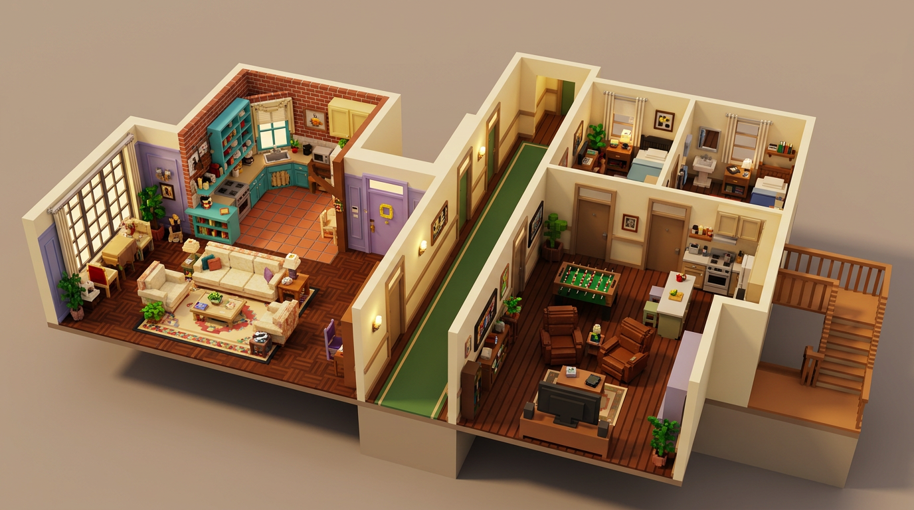
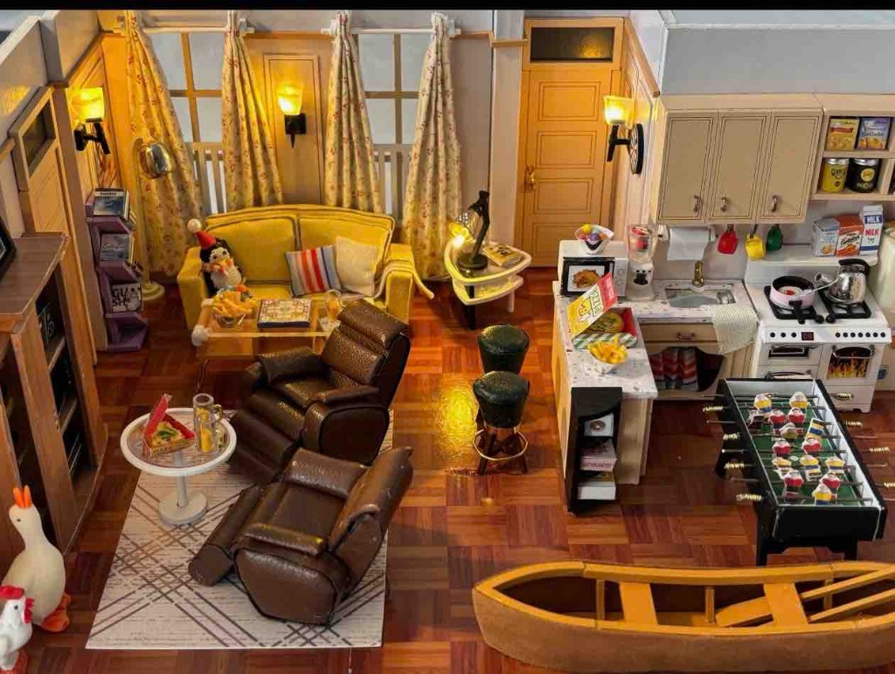
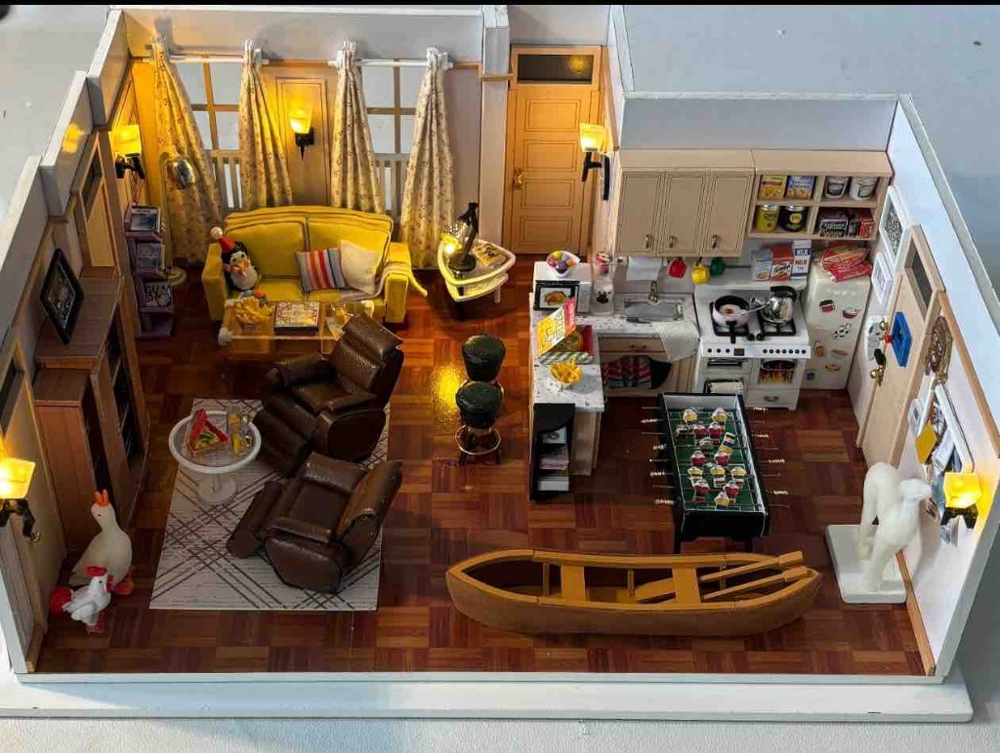
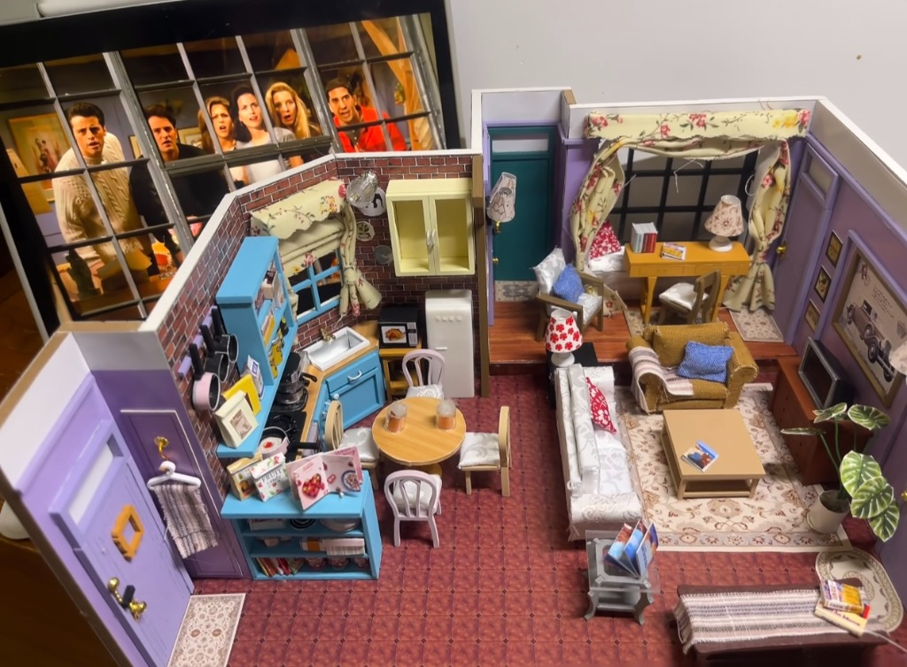
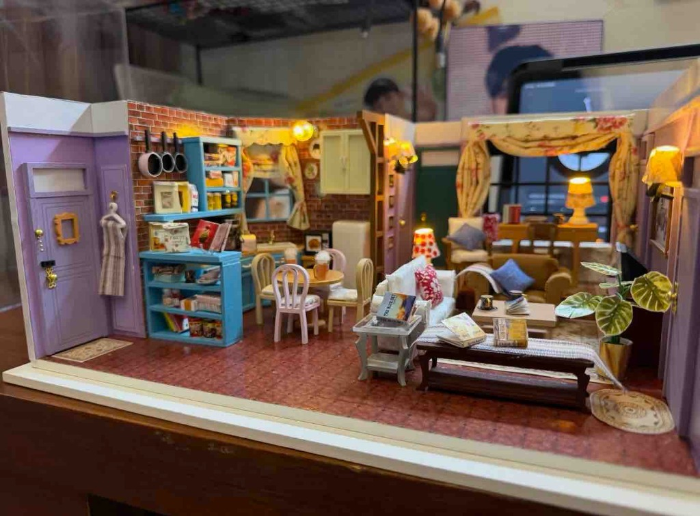
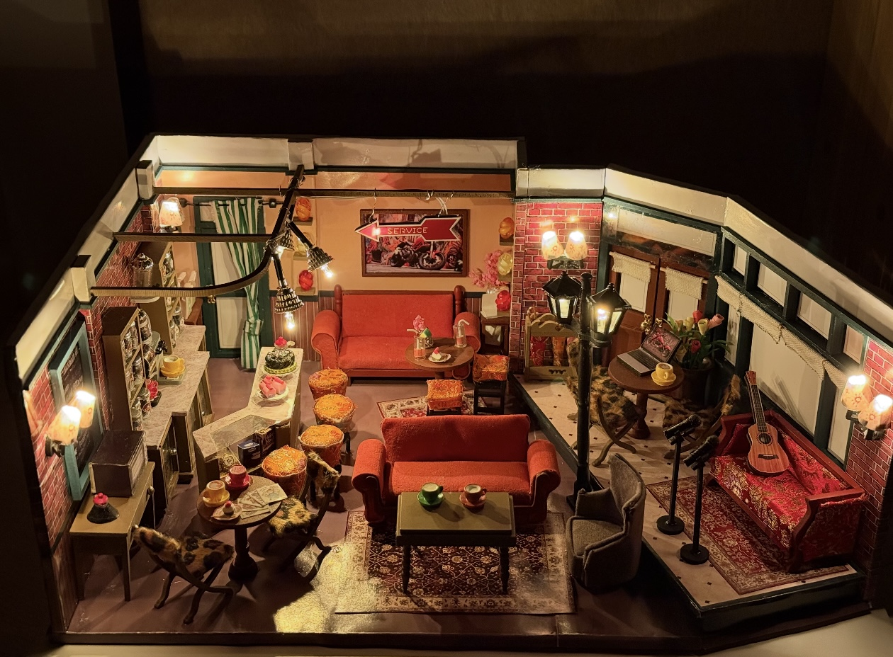
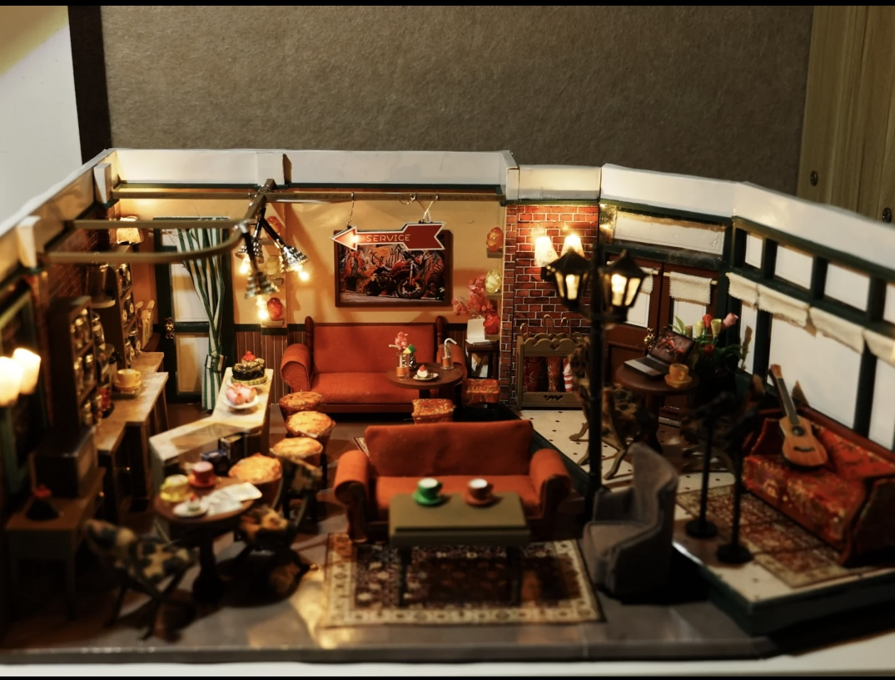

📸
POLAROID MEMORY
CENTRAL PERK
"I'll be there for you..."
因为你也是这样陪着我
还没有添加生词 👀
点击场景中的角色或气泡，再点英文单词即可收藏
当前 3D 微缩岛严格按照实物 DIY 微缩模型的空间结构与软装细节 1:1 体素级还原：







自动高光运镜编排 · 60FPS 超清视频导出 · 适合小红书/抖音/B站/朋友圈
超清 60FPS · 伴随原声爵士配乐与微缩环境音效